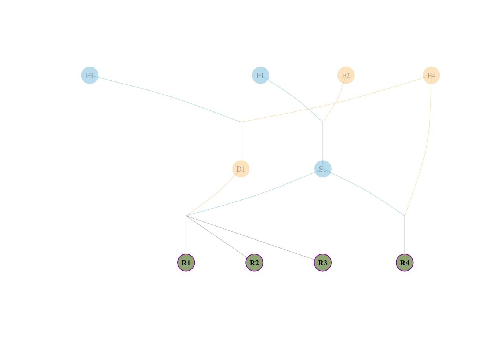
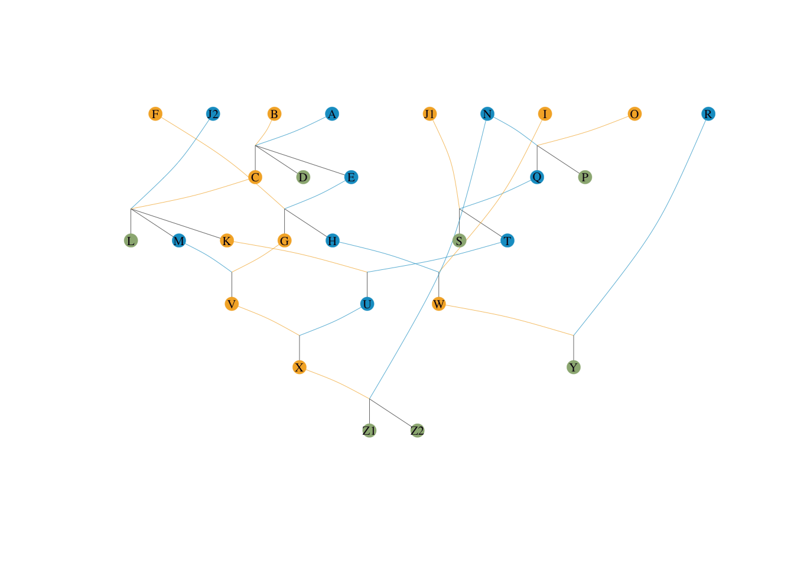
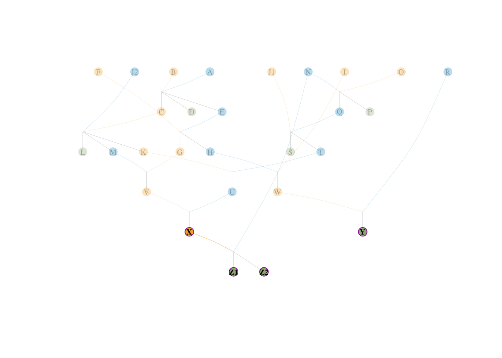

library(data.table)
library(visPedigree)
ped_sim <- fread("ped_sim.csv", na.strings = c("", "NA"))
tidy_ped_sim <- tidyped(ped = ped_sim)
ref_inds <- c("R1", "R2", "R3", "R4")
visped(tidy_ped_sim, highlight = ref_inds)
Sheng Luan
March 8, 2026
在群体遗传学和系谱分析中，有效始祖数（Effective number of founders, \(f_e\)）与有效祖先数（Effective number of ancestors, \(f_a\)）是衡量群体遗传多样性与遗传瓶颈的两个核心指标（Boichard et al., 1997）。本文通过构建一个具备典型“瓶颈效应”的微型系谱模型，以纯手工推导的方式拆解这两个参数的计算原理，最后调用正在开发的 visPedigree::pedcontrib() 函数进行自动化计算，实现理论推导与工程实现的交叉验证。 可以通过devtools::install_github("luansheng/visPedigree@pedigreeAnalysis")安装最新版本的 visPedigree 包开发版分支来复现本文的计算过程。
定义：在建群之初，有多少个无亲缘关系的奠基者（Founders）为当前群体提供了基因。
物理意义：假设当前群体中所有的基因多样性，是由贡献完全相等的、互不相关的理想始祖共同提供的，那么这个理想始祖的数量就是 \(f_e\)。\(f_e\) 越大，说明建群时遗传基础越宽广；\(f_e\) 越小，说明当初仅依赖极少数始祖，遗传多样性先天不足。它主要评估建群初期的多样性水平（始祖效应）。
计算公式（Boichard 1997 Appendix A）：
\[ f_e = \frac{1}{\sum(p_i^2)} \]
其中 \(p_i\) 代表始祖 \(i\) 对参考群体的期望遗传贡献（Expected genetic contribution）。
\(p_i\) 是什么？ 可以把它想象成一个随机抽签游戏：在参考群体的所有个体中随机挑一只，再在这只个体的所有等位基因里随机摸一个基因，然后沿着系谱一路向上追溯——这个基因最终来源于始祖 \(i\) 的概率，就是 \(p_i\)。换言之，\(p_i\) 就是始祖 \(i\) 在整个参考群体基因库中所占的”份额”。所有始祖的份额之和必然等于 1：\(\sum p_i = 1\)。
为什么要用平方 \(p_i^2\) ？ 设想我们独立地从参考群体中随机摸两个等位基因，它们都来自同一个始祖 \(i\) 的概率恰好是 \(p_i \times p_i = p_i^2\)。对所有始祖求和，\(\sum p_i^2\) 就是”任意两个基因来自同一始祖的概率”，它在群体遗传学中被称为基因同源碰撞概率，反映了群体基因来源的集中程度。\(\sum p_i^2\) 越大，说明基因越集中在少数始祖身上，多样性越低。
为什么取倒数？ 考虑一个极度理想的对照情形：\(N\) 个始祖贡献完全相等，每人 \(p_i = 1/N\)，此时 \(\sum p_i^2 = N \cdot (1/N)^2 = 1/N\)，即 \(f_e = N\)，结果恰好等于真实的始祖数。对于贡献不均衡的真实群体，\(\sum p_i^2 > 1/N\)（因为大贡献者的平方项远大于均摊时），取倒数后得到的 \(f_e\) 就会小于真实始祖数，体现出”实际可用的遗传多样性等效于多少个贡献均等的理想始祖”的含义。
直觉理解：若 4 个始祖贡献完全相等（各 25%），则 \(f_e = 1/(4 \times 0.25^2) = 4\)，等于真实数量。若其中一个始祖独占 97%，另外三个各占 1%，则 \(f_e \approx 1/0.97^2 \approx 1.06\)，说明尽管名义上有 4 个始祖，实际遗传多样性仅相当于 1 个人贡献的水平。
定义：覆盖当前参考群体全部基因多样性，最少需要多少个贡献完全相等、且基因互不重叠的“虚拟理想祖先”。
与 \(f_e\) 的本质区别：\(f_e\) 只看建群起点——那几批奠基者（Founders）的贡献是否均衡；而 \(f_a\) 审视的是整条繁育历史链路——从奠基者到当前参考群体，中间所有世代的繁育是否存在“明星父母本被反复重用”的瓶颈现象。
| 对比维度 | \(f_e\)（有效始祖数） | \(f_a\)（有效祖先数） |
|---|---|---|
| 关注时间点 | 仅建群初期 | 整个繁育历史 |
| 关注对象 | 无父母记录的奠基者 | 系谱中所有个体（含中间世代） |
| 能否捕捉瓶颈 | ❌ 不能（忽略后续历史） | ✅ 能（穿透所有世代） |
| 典型场景 | 评估建群多样性基础 | 评估历代繁育中的遗传瓶颈 |
物理意义：在对虾育种中，某个世代的高生长速率雄虾（父本）往往被大量用于配种，使其基因出现在几乎所有后代中，这就是遗传瓶颈。尽管 \(f_e\) 可能不低（奠基者数量够多），但 \(f_a\) 会因中间这个“漏斗”而显著降低，如实反映群体真实的遗传多样性水平。
计算公式：
\[ f_a = \frac{1}{\sum(q_j^2)} \]
其中 \(q_j\) 是祖先 \(j\) 对参考群体的边际遗传贡献（Marginal genetic contribution）。
\(q_j\) 与 \(p_i\) 的关键区别：\(p_i\) 是奠基者的“原始份额”，直接从血统追溯得到，且只针对奠基者计算。\(q_j\) 则是对系谱网络中任意一个祖先（包括中间世代的父母本）计算的“去重净贡献”——在已知其他祖先贡献的前提下，这个祖先额外、独立地解释了多少群体遗传变异。
为什么不能直接用 \(p_i\) 来计算 \(f_a\)？——双重计算问题
考虑这样一个场景：某批父本 S1 贡献了参考群体 50% 的基因，而 S1 的父本 F1 贡献了参考群体 25% 的基因（其中一半通过 S1 传递）。如果直接把 S1 的 \(p = 0.5\) 和 F1 的 \(p = 0.25\) 都放进公式里累加，F1 通过 S1 传递的那 0.25 份基因就被算了两遍！这在统计上是严重错误的。
边际贡献的计算——迭代剥离法（Boichard et al., 1997）
为了解决双重计算问题，Boichard 团队提出了一个贪心迭代算法：
第一轮：在所有候选祖先中，找出对参考群体贡献最大的那一个（设为 \(A_1\)），将其贡献全额记为它的边际贡献：\(q_1 = p_{A_1}\)。
第二轮及以后：将 \(A_1\) 设为“黑洞”——所有穿过 \(A_1\) 的血统通路都被截断，不再向更上层追溯。其余每个候选祖先 \(k\) 的“剥离后净贡献”按下式计算：
\[q_k = p_k - \sum_{j=1}^{\text{已选}} r_{jk} \cdot q_j\]
其中 \(r_{jk}\) 是候选祖先 \(k\) 经由已选定祖先 \(j\) 传递基因的路径比例，用于剥除重复计算的部分。在所有候选祖先的净贡献中选最大者作为 \(A_2\)，记 \(q_2\)，再截断，如此反复。
迭代终止条件：当 \(\sum q_j = 1.0\)，参考群体的全部遗传变异已被无重叠地分配完毕，迭代终止。
为什么 \(q_j\) 的平方和取倒数就是 \(f_a\)？
逻辑与 \(f_e\) 完全一致：\(q_j\) 已去重、互不重叠，可安全平方求和。\(\sum q_j^2\) 是等效理想祖先视角下的“基因同源碰撞概率”，取倒数即得等效祖先数：
\[f_a = \frac{1}{\sum q_j^2}\]
直觉对比（以对虾育种为例）：假设某对虾群体有 10 批奠基者，但某个中间世代有一批表现突出的父本被用于配了 90% 的母本。计算结果可能是 \(f_e = 8\)（建群时多样性尚可），但 \(f_a = 1.2\)（这批超级父本造成了极度瓶颈）。\(f_a / f_e = 0.15\) 直接揭示：历代繁育中遗传多样性流失了约 85%。
\(f_a \leq f_e\) 恒成立。\(f_a / f_e\) 越接近 1，说明历代繁育越均衡；比值越低，说明中间世代的父母本使用越不均衡，遗传漏斗效应越严重。
我们设计一个只有 10 个个体的小型群体，其中包含一个典型的繁育不平衡（瓶颈）现象：
F1, F2, F3, F4（这 4 个个体父母未知）。S1 是由 F1 和 F2 交配产生的（各占其一半血统）。D1 是由 F3 和 F4 交配产生的（各占其一半血统）。S1 表现出众（明星父本），它被过度运用。R1、R2、R3、R4。R1, R2, R3 全是 S1 \(\times\) D1 产生的后代。R4 是 S1 与奠基者 F4 回交产生的后代。先给出该模拟群体的系谱图，便于直观理解后续手工推导。

对于 4 个参考个体（R1-R4），向四位始祖溯源血统比例：
S1（父）× D1（母），血统溯源如下：
S1（父）× F4（母），血统溯源如下：
F4 本身即为奠基者，直接作为母本贡献 \(= 1/2\)；\(F3\) 无贡献 \(= 0\)群体的平均血统需求 \(p_i\)：
核对守恒：\(0.25 + 0.25 + 0.1875 + 0.3125 = 1.0\)。
手工计算有效始祖数：
\(f_e = \frac{1}{0.25^2 + 0.25^2 + 0.1875^2 + 0.3125^2} = \mathbf{3.878788}\)
按照迭代法则：
第一步：寻找第一主节点。
祖先 S1 是 R1~R4 中所有人的父亲，贡献度最高。\(p_{S1} = 0.5\)。
锁定 \(A_1 = S1\)，边际贡献 \(q_1 = 0.5\)。从 S1 往上的路径将被截流。
第二步：剥离后寻找最大节点。
S1 被截流后，剩余为母本那半条线。
D1 是 R1, R2, R3 的母亲，其剥离后的残余净贡献为 \(0.5 \times 3 / 4 = 0.375\)。
锁定 \(A_2 = D1\)，边际贡献 \(q_2 = 0.375\)，从 D1 往上的路径（主要是 F3 和 F4的共同线）被截流。
第三步：处理特例残余点。
R1~R3 的 \(1.0\) 变异已被 S1 和 D1 解释完整。R4 的父系 0.5 被 S1 解释，仅剩其母系来源。
R4 的母亲是 F4，其在 R4 上的残余净贡献分摊到群体为 \(0.5 / 4 = 0.125\)。
锁定 \(A_3 = F4\)，边际贡献 \(q_3 = 0.125\)。
核对守恒：\(q_1 + q_2 + q_3 = 0.5 + 0.375 + 0.125 = 1.0\)。不重不漏！
手工计算有效祖先数： \(f_a = \frac{1}{0.5^2 + 0.375^2 + 0.125^2} = \mathbf{2.461538}\)
visPedigree 进行代码模拟验证通过以上的推演，我们接下来在 R 中运用 visPedigree 中的 pedcontrib 函数测试该拓扑图的运算特征。
我们首先对比理论推导的 \(f_e = 3.878788\) 和 \(f_a = 2.461538\)。
理论 f_e = 3.878788 | visPedigree 计算 f_e = 3.878788理论 f_a = 2.461538 | visPedigree 计算 f_a = 2.461538结果丝毫不差。由于 \(f_a\) (2.46) \(\ll f_e\) (3.88)，程序准确评估到了该群体经历了狭窄的遗传瓶颈（即 \(S1\) 被极度超量使用）。
我们可以更深入地把计算出来的每位祖先的份额展示出来。
始祖贡献验证 (\(p_i\))：
Ind Contrib CumContrib Rank
<char> <num> <num> <int>
1: F4 0.3125 0.3125 1
2: F1 0.2500 0.5625 2
3: F2 0.2500 0.8125 3
4: F3 0.1875 1.0000 4可以看到 F4 因为被回交调用，占居了最高的 0.3125 初始基因份额比例。
瓶颈祖先边际贡献验证 (\(q_i\))：
Ind Contrib CumContrib Rank
<char> <num> <num> <int>
1: S1 0.500 0.500 1
2: D1 0.375 0.875 2
3: F4 0.125 1.000 3正如我们精妙的手工推导：程序完美地利用迭代法找出了 S1 (\(q=0.500\))、D1 (\(q=0.375\)) 以及回交残余截流点 F4 (\(q=0.125\))。它彻底避免了把父亲 S1 的基因和爷爷 F1 的发生任何重复相加带来的数学越界。
本次验算证明：visPedigree::pedcontrib 对有向无环图血统阻断的识别逻辑（边际降维与屏蔽传播）严格服从经典的 Boichard 定理，实现了在 R 语言环境下的精准重构。
深入思考：为什么 \(f_a\) 能更客观地反映一个群体的真真实状态？
在实际的繁育管理中，\(f_a\)（有效祖先数）确实比 \(f_e\)（有效始祖数）或普通的系谱规模更能反映群体的“真实家底”。这背后的核心原因在于它戳中了真实育种中不可避免的两个骨感现实：
S1）往往会被留作父母本并大量繁育后代。单纯看 \(f_e\) 时，所有的奠基者（Founders）都在建群时被赋予了平等的数学地位；但在真实血统传递里，那些没被选中的往往“断后”了，群体的真实基因库被极大压缩。\(f_a\) 通过“贡献剥离计算”无情地剔除了这种表面繁荣的假象。正因如此，在很多针对家畜或水产的保护遗传学评估里，学者们除了看两者的绝对值，更常常使用 \(f_a / f_e\) 的比值来评估历代繁育过程中基因多样性的流失严重程度——比值越低，说明个别核心祖先造成的遗传瓶颈和多样性收缩越严重。
small_ped前面的 10 个体模型主要用于直观理解。现在我们采用 visPedigree 包内自带的更为错综复杂的 small_ped 数据集（包含多世代、重叠世代和复杂的近交网络），以其中的后代个体 Z1, Z2, Y, X 作为参考群体，对其基因贡献和瓶颈进行二次无缝验证。


小型系谱 f_e = 6.585209小型系谱 f_a = 2.666667计算结果显示：\(f_e = 6.585\)，\(f_a = 2.667\)。
small_ped 的手工溯源剖析为了彻底揭开算法核心，我们从 tidyped(small_ped) 的真实网络中反向推导。目标参考群体是：X，Y，Z1，Z2。
首先明确他们的父母来源：
X (Sire: U, Dam: V)
Y (Sire: R, Dam: W)
Z1 (Sire: N, Dam: X)
Z2 (Sire: N, Dam: X)
这是一个极具代表性的复杂场景：参考群体中的个体 X，同时也是同一个群体中 Z1 和 Z2 的母亲！ 也就是“存在世代重叠的母系亲属”。
根据 Boichard 定理，参考群体本身的个体如果掌握巨量基因流，它们自己也可以作为有效祖先。我们可以清楚地看到 X 这个瓶颈到底有多大：
X 本身是参考群体的一员，所以它 \(100\%\) 的基因流向自己（占群体 \(1/4\) 份额）。X 是 Z1 的直接母亲，掌控了 Z1 \(50\%\) 的基因（占群体 \(1/4 \times 0.5\) 份额）。X 是 Z2 的直接母亲，掌控了 Z2 \(50\%\) 的基因（占群体 \(1/4 \times 0.5\) 份额）。我们来计算 X 的总边际贡献： \[ q_1(X) = \frac{1.0 (X) + 0.5 (Z1) + 0.5 (Z2)}{4} = \frac{2.0}{4} = \mathbf{0.50} \]
这意味着仅仅 X 一个人，就控制了整个参考群体 50% 的血统流向！她成为无可争议的第一且最大的特异祖先。
当 X 被确立为头号祖先后，她所在的父系母系节点被设为“黑洞”。此时，X、Z1 的母系、Z2 的母系基因流动全部被截断解释。
我们看还剩下什么：
Z1 体内存留的另外 \(50\%\) 的未解释变异，全部来自于它的父亲 N。Z2 体内存留的另外 \(50\%\) 的未解释变异，也全部来自于它的父亲 N。N 原本也有一小部分可以通过网络传给 X，但随着 X 被全盘剥离，那部分基因被彻底阻断截留，不再重复计算）。因此，第二号祖先呼之欲出，即 N： \[ q_2(N) = \frac{0.5 (Z1父系) + 0.5 (Z2父系)}{4} = \frac{1.0}{4} = \mathbf{0.25} \]
此时，Z1、Z2 和 X 这三个多代重叠个体的全部遗传变异（共占群体 \(75\%\)）已经被完美的双节点模型 \(X-N\) 分解殆尽！
最后看我们的第四个参考个体 Y，它在系谱网络的一侧，且和前面的 \(X, Z1, Z2\) 的阻断网完全隔离。 它 \(100\%\) 的变异依然完好无损没有被剥离。因此它自己代表了自己的完全变异（在真实的候选祖先计算中，可以是 Y 自己，或者 Y 的任一远端独占始祖等效作为其等量剥离源）。 为了补齐剩余的全部变异量，程序算出剩余边际贡献： \[ q_3(Y) = \frac{1.0 (Y)}{4} = \mathbf{0.25} \]
根据 visPedigree 的输出：
Ind Contrib CumContrib Rank
<char> <num> <num> <int>
1: X 0.50 0.50 1
2: N 0.25 0.75 2
3: Y 0.25 1.00 3通过重叠个体的自融与阻断，程序巧妙找出了巨型的“直系血统瓶颈 X”，防止了向古老始祖做微弱连接的碎片化寻根。从而得出极其精准的 \(f_a\)： \[ f_a = \frac{1}{0.50^2 + 0.25^2 + 0.25^2} = \frac{1}{0.375} = \mathbf{2.6667} \]
所有的 \(q_i\) 之和完美等于 1.000，没有任何“脱靶”或双重计算！
使用 visPedigree 包对系谱信息的深度挖掘，有助于极大地方便育种团队在全基因组选择或是常规家系繁育过程中掌握群体的实际遗传动态：
List of 7
$ n_ref : int 4
$ n_founder : int 4
$ n_founder_show : int 4
$ f_e : num 3.88
$ n_ancestor : int 3
$ n_ancestor_show: int 3
$ f_a : num 2.46对于日常分析，我们极力推荐使用集成的 pediv() 取代所有的单步繁琐调用：
NRef NFounder fe NAncestor fa fafe NeCoancestry
<int> <int> <num> <int> <num> <num> <num>
1: 4 4 3.878788 3 2.461538 0.634615 4.067406
NeInbreeding NeDemographic
<num> <num>
1: NA 2.666667通过这套成熟算法，visPedigree 可以完美还原那些极难被手工计算或理论推导所捕捉的非对称繁殖体系中的深刻遗传变化趋势。